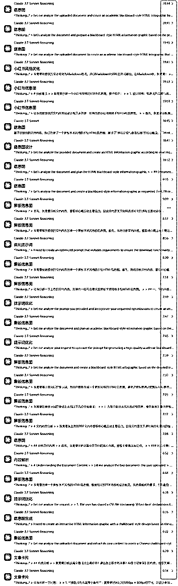
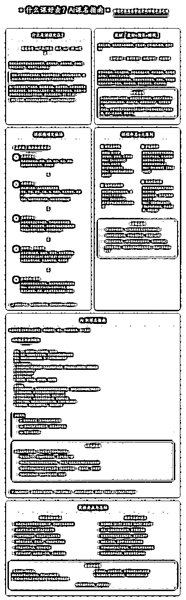
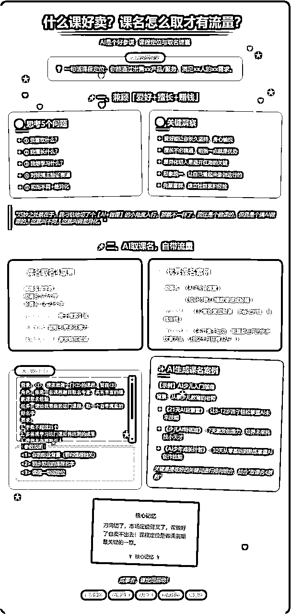
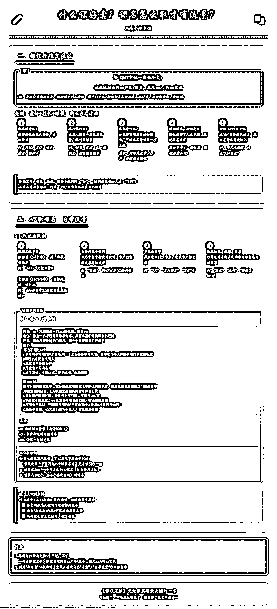
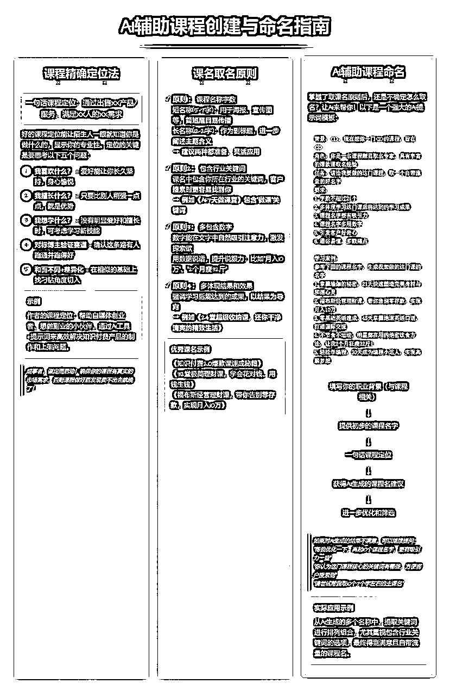
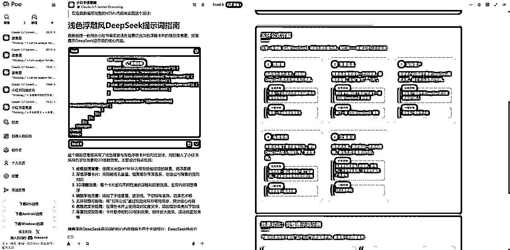
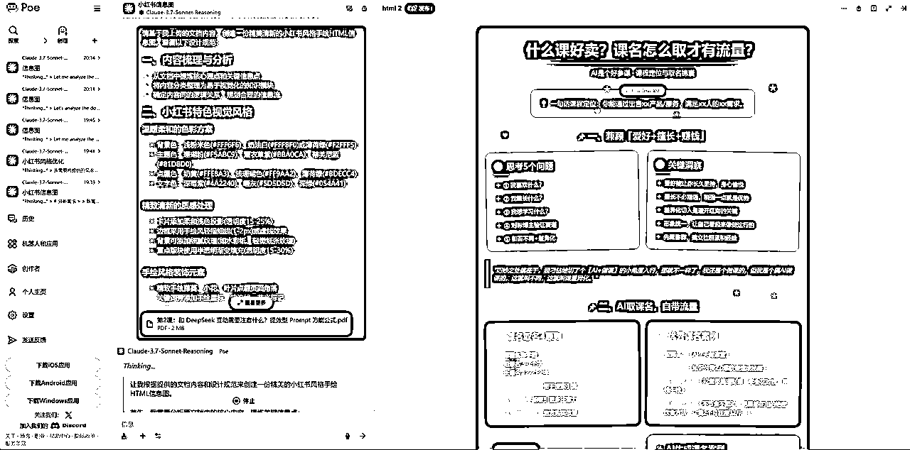
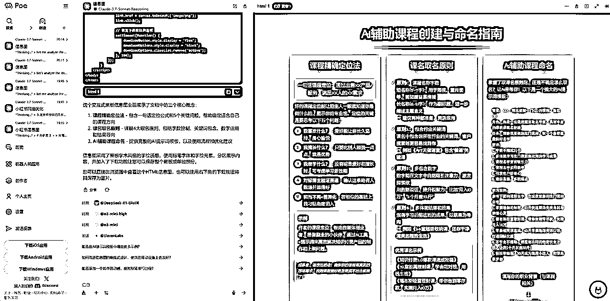
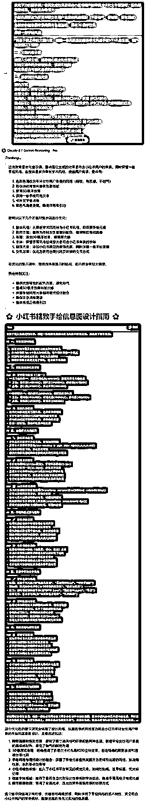

来源：https://d037mrmszsw.feishu.cn/docx/V03vdlYWAozJP4xTjKHcCyfEnMh
最近我要出一套新课，研究到【知识库可视化】部分，结果一发不🉑收拾，发现了用 Claude 3.7 一键生成「精美知识卡片」的小妙招，赶紧全盘拆解给大家，先睹为快⬇️
Claude 3.7 最近火了🔥，可视化效果真的是很强，审美一绝，连我这么「完美主义➕强迫症」的男人，都感叹不已😄
这两天我一直在测试用 Claude 3.7 一键生成「知识卡片」的效果，前前后后打磨了十几套提示词，生成的图片没有上百张也有大几十张了，看看我的测试频率⬇️

最终，终于有比较满意的效果了，今天我给大家演示 6 种 Claude 3.7 一键生成「知识卡片」的效果，再提供大家一套我已经打磨好的【提示词】，大家🉑以直接套用！




官网：https://claude.ai/
⚠️需要【墙+接码平台】，这个我们就不讨论了🧙♀️
除了官网，还有以下渠道可以顺利使用上 Claude 3.7 Sonnet
https://zhuanlan.zhihu.com/p/27259457041
⬆️大家🉑以参考下知乎的这篇文章
⭐️推荐大家使用 Poe
官网：https://poe.com/
可以用「美国ID 苹果手机」通过「支付宝 小程序 Pockyt Shop」充值，没有手续费🍜
当然，大家也可以使用国内镜像网站，这个不做评价~
（⬅️点击这份飞书文档跳转，🉑直接复制提示词）
请基于我上传的文档内容，创建一份高质量的黑板学术风格手绘HTML信息图。请严格遵循以下规范： 一、文档内容分析 请深入分析文档，提取核心概念和主要论点 识别文档中的关键数据点、流程和框架 确定最适合可视化呈现的内容部分 二、黑板设计风格元素 颜色方案 黑板底色：深青石板色 (#1A2F34) 主要文字：粉笔白色 (#F8F9FA) 强调色：明黄 (#FFEB3B)、粉绿 (#8BC34A)、天蓝 (#03A9F4) 重点标记：采用柔和的琥珀色 (#FFC107) 或淡紫色 (#9C27B0) 代替刺眼的红色 注释色：淡灰 (#B0BEC5) 版块底纹处理 避免使用纯色大面积底纹，尤其是红色底纹 重要版块可使用柔和的渐变效果 (如 #2C3E50 到 #34495E) 采用粉笔痕迹纹理增加质感，而非单调的填充色 可使用细微的虚线框或点状纹理作为区域分隔 边缘添加不规则的粉笔擦拭效果，营造自然过渡 手绘质感元素 使用不规则的粉笔质感线条 手写风格的标题和文本 边缘带有模糊效果的粉笔框 手绘风格的箭头和连接线 模拟粉笔绘制的图表和示意图 三、页面布局结构 主标题区域（顶部） 使用中文手写风格字体 添加粉笔痕迹装饰效果 确保标题两侧的图标与标题之间不重叠 灵活的模块化内容布局 采用多样化的内容版块组织，不拘泥于固定栏数 丰富多样的内容版块设计，可包括概念框架、思维导图、核心内容展开、数据可视化、案例分析等 根据内容逻辑关系，灵活排列各个知识模块 可使用网格布局、卡片布局、分层布局等多种呈现方式 根据内容重要性和关联性合理分配版面空间 内容展示元素 使用粉笔框包裹各个内容模块 为重点内容添加柔和的光晕效果而非刺眼的底色 使用手绘流程图表达步骤关系 关键数据用手绘图表展示 四、字体和文本规范 中文字体 主标题：手写风格大字体（如"智漫行"或类似风格） 次级标题：加粗的中文字体（如"思源宋体"粗体） 正文内容：手写风格中文字体（如"马善政"或类似风格） 英文字体 选用清晰易读的手写风格字体（如"Architects Daughter"） 增加字母间距和行高 适当增加字体大小和粗细 必要时添加柔和的阴影或轮廓增强可读性，避免使用重色背景 布局与间距要求 每个版块的标题居中显示 每个版块的标题与下方内容保持适当间距，避免重叠 确保所有文字内容不会溢出卡片或页面范围 五、交互与动效 添加简单的粉笔书写动画效果 鼠标悬停时使用柔和的发光效果突出内容，避免刺眼的色彩变化 为数据点添加放大镜效果 保持整体响应式设计，兼容移动设备 请确保最终呈现的HTML信息图既美观实用，又符合黑板学术风格的手绘质感，同时清晰展现文档的核心内容。注重整体色彩和谐与视觉平衡，优先确保文字清晰易读，尤其是英文部分。
这一步就比较简单了，套用「半目」提供的现成「提示词」，正常和 Claude 互动就好，就像和 DeepSeek、Kimi、豆包 这些AI工具互动的基本操作差不多



大家也可以用自然语言，让 Claude 根据你的具体需求，去帮你魔改提示词，从而调整生成自己想要的视觉效果
🎯比如像这样 ⬇️

💡另外，大家也可以把自己【心仪】的【海报、小红书卡片】等，直接发给 Claude 解析，让 Claude 来分析这些图片元素（比如风格、色彩色调、字体等），然后再让 Claude 根据以上分析，来魔改你的【提示词】，这样就能仿照生成自己【心仪】的效果啦🌶
⭐️当然，有条件的同学，也可以将以上所有打包，封装成独立网站或者工具，设置会员收费系统，那就更有【钱】途了，欢迎与我交流~
我是半目，专注【AI做课变现】，帮助知识IP，通过 DeepSeek 等 AI 工具来高效解决知识付费产品的制作、上架和营销问题❤️
🔚 最后推荐半目在生财发的几份贴子，对「AI做课变现」感兴趣的玩赚小伙伴，可以读上一读📖
🤔 大家平时如有「AI做课变现」相关的疑问，🉑随时留言「半目」，我一般都在，随时解答💞
✔️【推荐阅读①】⬇️
《半夜睡过广场，也月赚过16.5万，我是怎么一步步找准「AI+做课」这条蓝海赛道的？》
https://t.zsxq.com/BiSzS
✔️【推荐阅读②】⬇️
《做课AI工具推荐，2种提示词直接套用》
https://t.zsxq.com/MycFR
✔️【推荐阅读③】⬇️
《什么课好卖？课名怎么取才有流量？AI是个好参谋》
https://t.zsxq.com/HeREX
✔️【推荐阅读④】⬇️
《课程录制设备搭建，还能兼顾直播，良心推荐》
https://t.zsxq.com/Ahutj